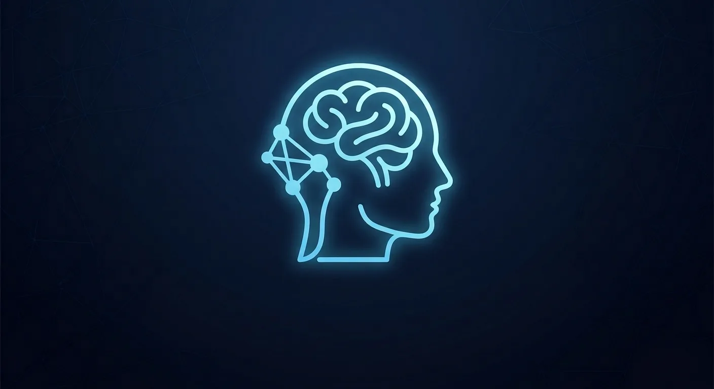

Protect
Zero-flicker displays, circadian-aware light, and posture sensing designed around the biological substrate.

A living portfolio for the biological era
mobilityX imagines a future where the phone stops demanding attention and starts extending human capability — health-first, adaptive, and quietly intelligent.

The future of connection is you.
We are moving from a hardware era built around replacement and distraction toward an architecture that protects attention, health, privacy, and agency.
See the principles →Every project starts with a human signal — a glance, a touch, a need for autonomy — and turns it into a calm, legible interface with the world.
Zero-flicker displays, circadian-aware light, and posture sensing designed around the biological substrate.
Turn complex machine intelligence into accessible, human-scale moments — from gaze to touch to sound.
Build for local utility, modular longevity, and an anti-addiction OS that returns control to the person.
A glimpse into the archive: prototypes and product directions for a more connected, more human everyday.

Hands-free interaction for moments where attention is the most powerful input.

Translating sound into a language the body can understand.

Reimagining the screen as a surface for tactile information and agency.

Exploring ambient energy as an invisible, always-on resource.

Less strain, more presence — display systems designed around the human eye.
Watch the experiments move from concept to lived experience. Each study opens in the supplied Drive archive.
By 2126, carrying a device may feel like a relic. The interface becomes adaptive, bio-integrated, and present only when it is needed.
For collaborators, curious minds, and people building a more human future.
Enter the archive ↗